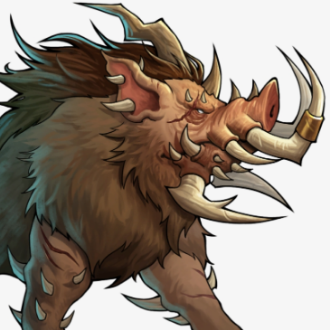

Jabali
Estadísticas Básicas
- Agilidad: 4
- Combate (puntería): 4
- Fuerza: 8
- Percepción: 3
- Resistencia: 12
- Reducción de Daño: 25%
Nivel y Combate
Nivel de Peligro: 2
Nivel Base: 1
Daño: 1d4 por Nivel * 4
Efecto: 25% (Derribo y sangrado)
Vida Base: 20 + 8 por nivel
Acciones
Acciones de Ataque: 3
Acciones de Movimiento: 3
Habilidades Especiales
- Olfato agudo: Puede detectar a los enemigos antes de que realicen una emboscada, evitando ser atacados por sorpresa.
- Piel resistente: No reciben daño por ataques desarmados.
- Velocidad rabiosa: Al tener 20% de salud o menos, los jabalies se ponen en primer turno, al inicio de ronda.
Despojos al Morir
- Piel (1, o 2 con 4 en agilidad)
- Carne. Comestible
- Cuernos. Utilizables de forma estética